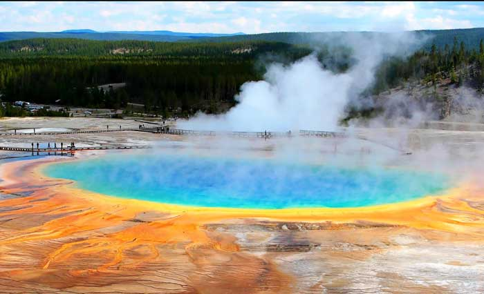
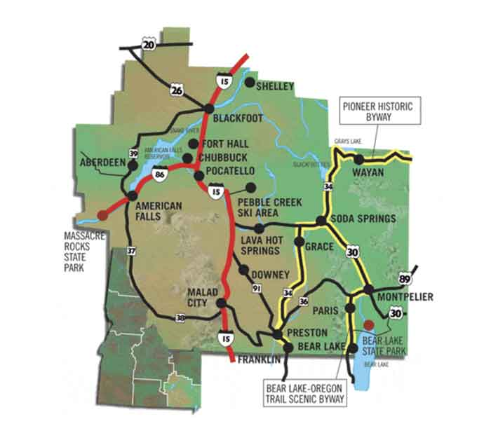

Soda Springs, Idaho
Weather Summary
Currently: ?
Temperature: ? °F High: ? °F Wind Chill: ? °F Humidity: ?% Wind Speed: 10 mph
℉ |
℉ |
℉ |
℉ |
℉ |
Geyser Park
Soda Springs has the only captive geyser in the world. It was discovered in an attempt to find a hot water source for a swimming pool. On November 30, 1937, the drill went down 315 feet and unleashed the geyser. The extreme pressure ed by carbon dioxide gas mixing with water in an underground chamber. It is now capped and controlled by a timer. It erupts every hour on the hour. The geyser reaches heights of 100 feet year round.
There is a Visitor Center which features interpretive signs and restrooms in the park. There is a boardwalk around the geyser and grassy areas with picnic tables and benches to enjoy the day and view the geyser. The geyser is located behind the Enders Hotel located on 1st South and Main.
The Oregon Trail passed through Soda Springs. At the time it was known as the "Oasis of Soda Springs". Between Fort Laramie and Fort Boise, Soda Springs was a major landmark and is the second oldest settlement in Idaho.[1] Sulphur Springs was the first hot spring that the Oregon Trail immigrants encountered in the soda springs area. Pyramid springs was discovered by fur trappers and pioneers, they discovered the springs by noticing mounds of soda formed rock and clay. Johnkirk Townsends said in his diary, “Our encampment on the 8th was near what are called the’White Clay pits,” still on Bear River. The soil is soft chalk, white and tenacious: and in the vicinity are several springs of strong super carbonated water which bubble up with all the activity of artificial fountains. The taste was very agreeable and refreshing, resembling Saratoga water but not so saline. The whole plain to the hills is having depressions on their summits from which once issued streams of water. The extent of these eruptions, at some former period, must have been very great. At about half a mile distant, is an eruptive thermal spring of the temperature of 90 [degrees], and near this is an opening in the earth front which a stream of gas issues without water.”
Contact information
Search The Skies
PO Box 999
Preston, ID 88888